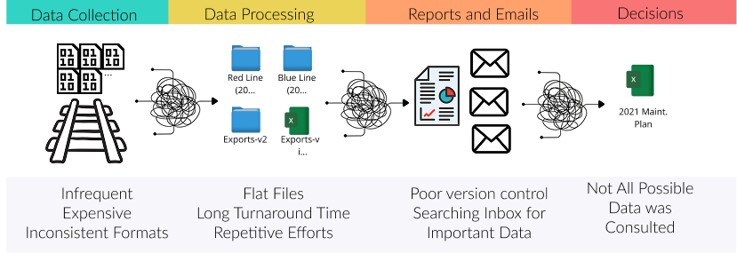
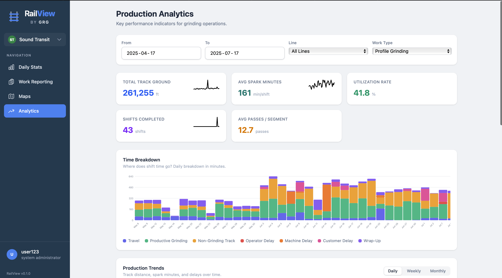

RailView / Field Operations Platform
A rail maintenance company ditched their spreadsheets and never looked back.
A rail grinding company serving 15+ North American transit systems (Sound Transit, BART, NYCT, SkyTrain) replaced their spreadsheet-and-email workflow with a single platform. It changed how they win and retain contracts.

RailView: live map showing completed work across the Sound Transit network
§01
Sound Familiar?
The work gets done. The reporting doesn't keep up.
- Spreadsheets at 4 AM. Data arrives late, incomplete, or not at all. You can't bill for work you can't document.
- Reports vanish into inboxes. Client asks for last month's summary? That takes days to assemble.
- No coverage map. You can't show a client where you've been or where gaps remain.
- Delays are invisible. No way to identify patterns or push back on client-caused downtime with data.
- Every new client means another template, another email list, and hoping everyone follows the same conventions.

The typical field reporting workflow: inconsistent collection, flat files, email chaos, incomplete decisions
The real cost isn't inefficiency. It's the contracts you can't win because you can't demonstrate operational rigor.
§02
What Changes with RailView
One platform for every shift, every segment, every delay. When a client asks what you did last week, the answer is a link. Not a research project.

structured, and auditable
automatically on submission
and delay tracking
01
Every Shift Documented. No Exceptions.
- Structured mobile forms with auto-populated fields and guided entry
- Validation catches missing data and impossible time sequences before submission
- Automatic client notifications the moment a crew submits

02
Show Clients Exactly Where You've Been
Hand them a map, not a spreadsheet. Each transit system's network, segments, and reference system is already configured.
- Coverage heat maps: heavily worked, barely touched, or overdue
- Work overlays by category and date range
- Mileposts and chainpoints mapped to your clients' reference systems
03
Walk Into Client Meetings With Answers
Real-time dashboards. No more scrambling to build a monthly summary.
- Production: track covered, utilization rate, trend lines
- Time breakdown: travel, productive work, machine delays, client holds
- Delay analysis: root causes ranked by impact. Push back with data when delays aren't yours
- Trends: period-over-period comparison by line, crew, or work type

Production analytics: KPIs, time breakdown by category, and trend tracking across 261,255 ft of track
04
Win a New Contract. Onboard in Hours.
Already serving 15+ transit authorities from one deployment. Going from 15 to 16 is configuration, not development. The platform can be white-labeled with your brand, your domain, and your client-facing identity.
- White-label ready: your logo, your colors, your domain
- Five-tier access control from admin to view-only stakeholder
- Client-scoped catalogs for equipment, personnel, and segments
- Complete audit trail for compliance reviews
§03
Before & After
| The Old Way | With RailView |
|---|---|
| Shift reports arrive late, incomplete, or not at all | Every shift documented, validated, and stored before the crew leaves the site |
| Client asks "what did you do last month?" Answer takes days | Real-time dashboards and exportable reports, always current |
| No way to show coverage. Work described in text | Interactive maps with heat maps, overlays, and gap analysis |
| Delays invisible. No way to identify patterns or push back | Categorized delay tracking with root-cause analysis and trend data |
| Reporting depends on individuals following conventions | Structured data capture with validation. Consistent by design |
| New contract = weeks of admin setup and hope | New client configured and live in hours |
| No audit trail. Compliance questions are a scramble | Full history with timestamps, attribution, and edit tracking |
§04
Built for Rail. Ready for Your Industry.
Built for rail. But the problem it solves, the gap between work done in the field and work that gets documented, exists in every field services company. The platform adapts to your data model in weeks.
Road & Highway
Pothole repair, milling, striping, guardrail work. Coverage maps show what's maintained vs. neglected. Delay analysis surfaces equipment, weather, and permitting bottlenecks.
Utilities
Pipeline inspection, line clearing, meter replacement. Work along linear assets with reference systems. Compliance requires knowing exactly what was done, when, and by whom.
Municipal Public Works
Street sweeping, storm drains, sidewalk repair. Geographic coverage tracking and crew productivity metrics to justify budgets and respond to constituent complaints.
Environmental Services
Vegetation management, erosion control, corridor monitoring. Regulatory reporting demands structured data with audit trails, not folders of spreadsheets.
Under the Hood
Simple by design. One backend language, one database, serverless hosting. No DevOps team required.
| Layer | Technology |
|---|---|
| Backend | Python (Django), REST API |
| Frontend | React, TypeScript |
| Database | PostgreSQL + PostGIS (geospatial) |
| Mapping | Mapbox GL JS |
| Hosting | Google Cloud Run (serverless containers) |
| Auth | JWT with role-based access control |
| Background Tasks | PostgreSQL-backed queue (no Redis/RabbitMQ) |
Your next client will ask how you track your work.
Make sure the answer isn't "spreadsheets." RailView adapts to your industry, your data, and your clients. Typically in weeks, not months.
hello@avrah.studio